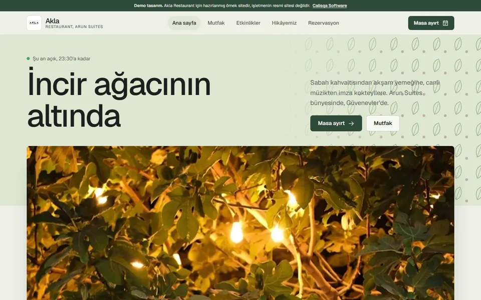
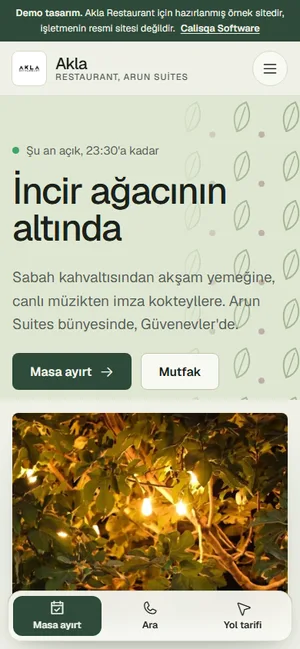

Akla Restaurant
Restoran · Kahvaltı · Pub · Arun Suites bünyesinde
- 4,6 (117 Google yorumu)
- Telefon
- 0532 161 86 15
- Durum
- aklarestaurant.com alınmış ama yalnızca "Yakında açılıyor" sayfası var.
- Sayfalar
- 5 sayfa: Ana sayfa, Mutfak, Etkinlikler, Hikâyemiz, Rezervasyon
Alan adını zaten almışlar, yani site istiyorlar. Bu demo o alan adına bu hafta yayına alınabilir. Rezervasyon formu ve etkinlik takvimi hazır.
İncir bahçesi